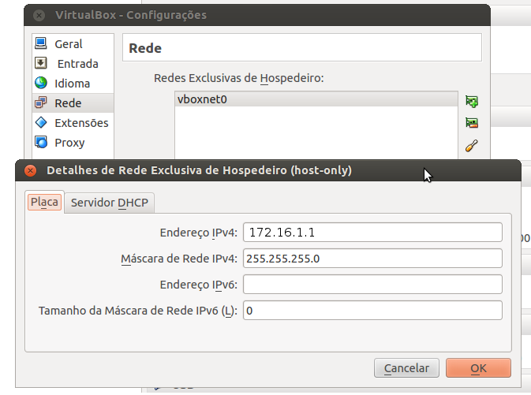
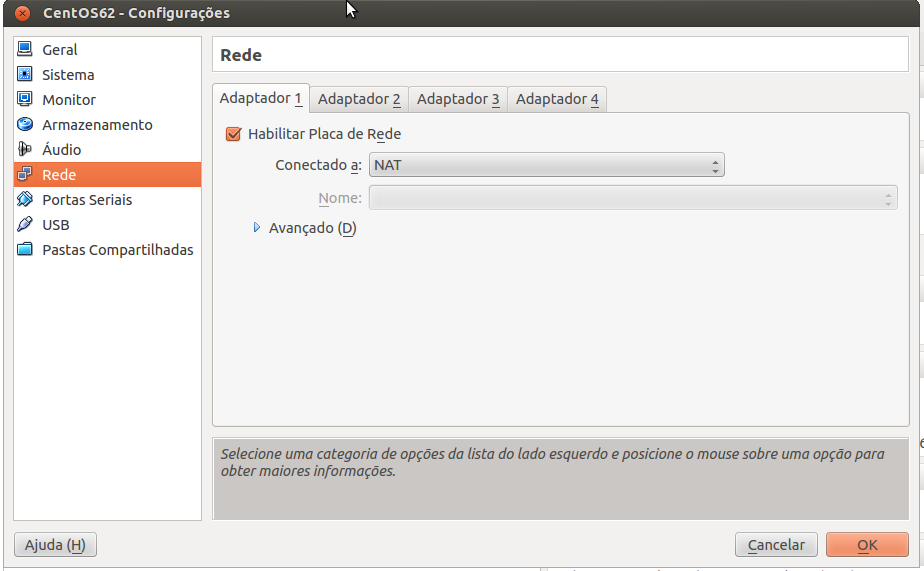
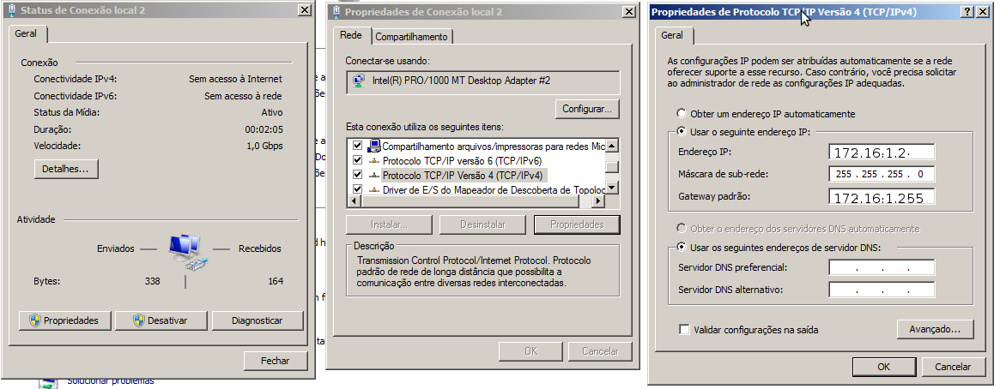
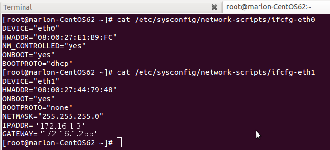

VirtualBox:Criando uma rede interna entre Host e VMs com ips estáticos
Bem, configurações de máquinas virtuais não estão diretamente relacionadas a programação, mas, muitas vezes máquinas virtuais são úteis para testes de algumas situações como foi o meu caso, que precisei simular um cluster de banco de dados.
Cenário: Tenho um servidor postgres instalado no meu SO nativo(Ubuntu 12.04) e queria testar replicação de dados num cluster com outras 2 máquinas. No caso, usei o VirtualBOx para criar 2 máquinas virtuais: uma com Windows 7 e outra com CentOS 6.2. O requisito básico para que a replicação possa funcionar antes de qualquer configuração no banco é que as máquinas se enxerguem na rede, é aí que entra este post.
Quando decidi implementar esse ambiente pesquisei bastante para tentar encontrar a melhor forma e isso não foi tão fácil quanto eu achei que seria(talvez porque eu nunca tivesse usado VirtualBox para nada). Se você tentar pesquisar no Google sobre como preparar um ambiente similar, muitos blogs, fóruns e etc, sugerem que você configure a VM com uma placa de rede em modo bridge, o problema é que, dessa maneira sempre que eu precisar ligar as máquinas virtuais e não houver uma rede real que eu possa receber um ip o ambiente deixaria de funcionar, ou seja, só poderia usar as VM’s se tiver conectado de fato a alguma rede real.
Depois de muito procurar, encontrei esse post do Rafael Biriba que explica exatamente como criar uma rede entre VM’s e host, atribuição de ip estático e ainda com as VM’s tendo acesso a internet. Perfeito!
E porque eu to escrevendo outro post então? Pois é, o post do Rafael deixa algumas coisas implícitas, e como eu nunca tinha usado VirtualBox, ainda tive que dá uma fuçada, então, vou simplesmente detalhar o que ele explica. Vamos ao que interessa!
1 - Configurar uma rede host-only: Abra o VirtualBox(estou usando 4.1.12) e vá em File > Preferences > Rede e adicione uma rede host-only no seu VirtualBox como mostra a imagem abaixo:

O campo “Endereço IPv4” é o ip que o seu SO host irá receber na interface de rede vboxnet0(para Windows o nome da interface de rede pode mudar) toda vez que você abrir o seu VirtualBox, no meu caso, usei o ip 172.16.1.1. Um ponto importante é que o servidor DHCP dessa rede host-only deve ficar Desabilitado, o que vai nos ajudar a atribuir os ip’s estáticos mais adiante.
2 - Configurar as interfaces de rede nas VM’s: Selecione sua VM e click em Settings > Rede e configure duas interfaces de rede conforme exibido nas imagens abaixo. A primeira interface deve ser do tipo NAT e é ela quem vai garantir acesso a internet para os SO’s convidados e a segunda deve ser do tipo host-only, é através dela que as VM’s e o host se comunicarão. Na interface host-only você deve selecionar a interface que configuramos no passo 1 para todas as VM’s que você quer colocar numa mesma rede.


3 - Atribuir ip’s estáticos nas VM’s: Nesse momento, o SO host já tem uma interface de rede, que neste caso, foi configurado com o ip 172.16.1.1. Esse ip não mudará(a menos que você faça isso manualmente), falta somente configurarmos os ip’s estáticos nas VM’s.
No caso da minha VM Windows a Conexão de rede local 1 representa a interface NAT e a mesma deve pegar um ip através de DHCP(que já é o comportamento padrão), já a Conexão local 2 representa a interface host-only e ela deve ser modificada para receber um ip estaticamente conforme imagem abaixo:

A minha VM CentOS ficou com a interface de rede eth0 sendo a interface de rede NAT, da mesma forma que na máquina Windows ela deve receber um ip via DHCP. A interface eth1 equivale a rede host-only e você deve atribuir um outro ip estaticamente, abaixo segue minhas configurações:

4 - Detalhes adicionais
Não está no escopo deste post descrever como instalar os adicionais para convidados(VirtualBoxGuestAdditions) mas é importante que você instale essa ferramenta nas suas máquinas virtuais.
Tive problemas tanto no Windows como no CentOS no que se refere a comunicação devido a bloqueios de firewall, portanto, se tiver algum problema verifique se não é isso.
No CentOS, a interface NAT foi reconhecida de primeira, porém, a interface host-only só foi reconhecida quando eu instalei o NetworkManager.
Bem, com isso você já pode se conectar nas suas VM’s ou suas VM’s se conectarem ao host, para verificar isso, um teste simples é executar um ping entre as máquinas.
Eu sou o caminho, e a verdade e a vida; ninguém vem ao Pai, senão por mim.
Jesus Cristo